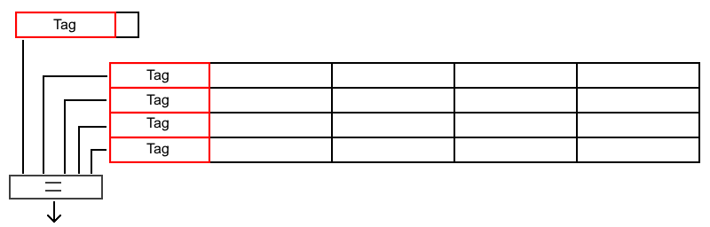
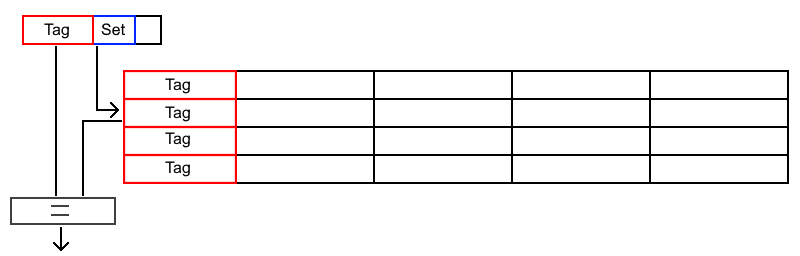
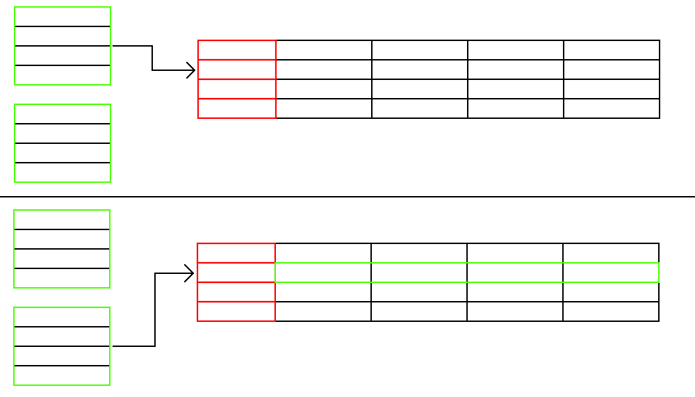
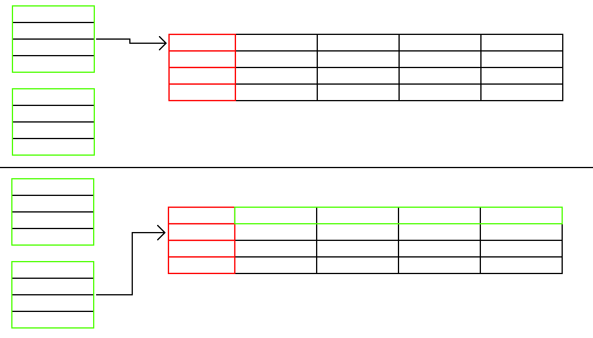
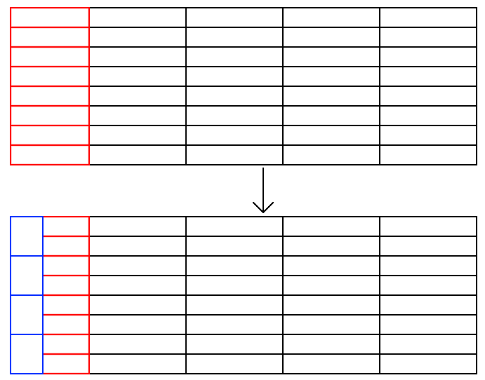
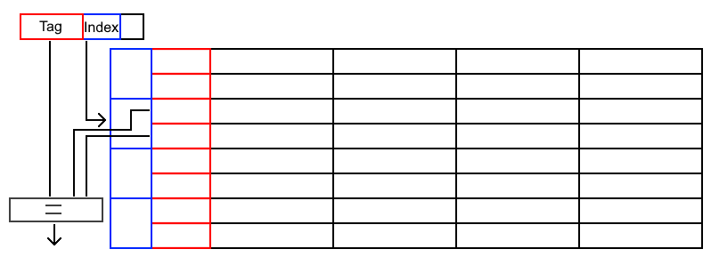
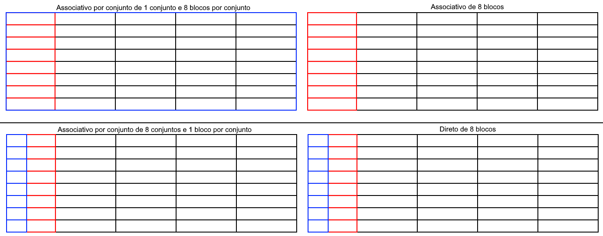

O que é mapeamento associativo por conjunto?
O mapeamento associativo por conjunto é um método de acesso a memória cache cujo propósito é diminuir as desvantagens dos mapeamentos direto e associativo, que são a taxa de colisão e a complexidade dos circuitos na busca pelo endereço na cache respectivamente. Para isso, o mapeamento associativo por conjunto faz uso de características desses dois métodos de acesso a memória.
Como o mapeamento direto contorna o problema do associativo?
O mapeamento associativo tem o problema de ter que comparar a tag de todos os blocos paralelamente para verificar se o bloco da memória já está presente na cache. Por isso, quanto maior o número de blocos da cache, mais complexo é o circuito de comparação das tags.
 Circuito para comparar as tags.No mapeamento direto, basta implementar no circuito simples da função hash i = j mod m para qualquer m número de blocos na cache. Portanto o endereçamento é mais fácil no mapeamento direto.
 Circuito para encontrar o bloco.Como o mapeamento associativo contorna o problema do direto?
O mapeamento direto pode ter muitas colisões, visto que todo bloco da memória principal com o mesmo index será colocado no mesmo bloco. Caso haja alternancia entre dois ou mais blocos de mesmo índice, a taxa de acertos será extremamente baixa, pois o bloco que está sendo procurado terá sido substituido logo antes do acesso.
 Colisão de dois blocos.No mapeamento associativo, os blocos são substituidos apenas quando a cache está cheia e os blocos podem ser alocados em qualquer posição. Por isso, para qualquer bloco da memória, independente de seu índice, a taxa de acerto tende a ser a mesma.
 Dois blocos que colidiriam no mapeamento direto não se substituem no associativo.Como funciona o mapeamento associativo por conjunto?
Como o mapeamento associativo aumenta a complexidade do seu comparador com o número de blocos, é dividido o número de blocos em conjuntos de mesmo número de blocos. Dessa forma, o número de blocos a serem comparados paralelamente diminui quanto mais conjuntos existirem.
 Conjuntos do mapeamento associativo com conjuntos.Esses conjuntos serão endereçados por meio de um mapeamento direto, com o índice sendo o número do conjunto. Assim, o circuito necessário para encontrar o conjunto correto será simples.
 Endereçamento dos conjuntos.Organizando dessa forma, mesmo que haja colisão no mapeamento dos conjuntos, há um mapeamento associativo dentro dos conjuntos que diminuirá essa desvantagem.
Pode-se imaginar que o mapeamento direto é um mapeamento associativo por conjunto em que há apenas um bloco por conjunto e o mapeamento associativo é um mapeamento associativo por conjunto com apenas um conjunto.
 Comparação dos métodos de acesso.